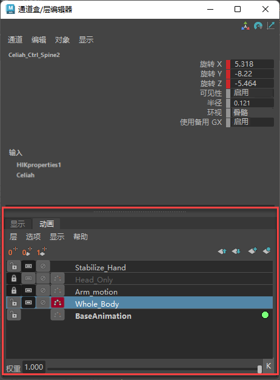

创建动画层时有两种基本方法可供选择。可以创建空层，稍后再将属性添加到其中，或者为选定对象创建层，然后让其属性自动添加到该层。

“动画层编辑器”(Animation Layer Editor)（已亮显），位于“通道盒”(Channel Box)下方
若要访问“动画层编辑器”(Animation Layer Editor)，请执行以下操作：
- 切换到“通道盒”(Channel Box)下面的“动画”(Anim)选项卡。
- 若要将“动画层编辑器”(Animation Layer Editor)作为单独的窗口打开，请切换到“通道盒”(Channel Box)底部的“动画”(Anim)选项卡，然后从“动画层编辑器”(Animation Layer Editor)菜单栏中选择。
也可以确定创建动画层时动画层所处的模式，或者先创建层，稍后再更改层的模式。在创建动画层时，动画层将命名为 AnimLayer1、AnimLayer2 等。可双击层名称以重命名层。
创建空动画层
- 在“动画层编辑器”(Animation Layer Editor)中执行以下操作之一：
- 单击工具栏中的“创建空层”(Create Empty Layer)图标
 。默认情况下，该动画层将在“相加”(Additive)模式中。
。默认情况下，该动画层将在“相加”(Additive)模式中。
- 若要在“相加”(Additive)模式下创建空层，请选择“层 > 创建空层”(Layers > Create Empty Layer)。
- 若要在“覆盖”(Override)模式下创建空层，请选择“层 > 创建覆盖层”(Layers > Create Override Layer)。
将创建新层并将其添加到“动画层编辑器”(Animation Layer Editor)中的堆栈。
准备就绪后即可将属性添加到空层中。请参见将对象或属性添加到动画层和将其从动画层中移除。
- 单击工具栏中的“创建空层”(Create Empty Layer)图标
为一个或多个选定对象创建动画层
- 选择要在动画层上设置动画的对象。
- 在“动画层编辑器”(Animation Layer Editor)中执行以下操作之一：
- 若要在“相加”(Additive)模式中创建层，请选择“层 > 从选定对象创建层”(Layers > Create Layer from Selected)。
- 若要在“覆盖”(Override)模式中创建层，请选择“层 > 从选定对象创建覆盖层”(Layers > Create Override Layer from Selected)。
- 单击工具栏中的“从选定对象创建层”(Create Layer from Selected)图标
 。默认情况下，该动画层将在“相加”(Additive)模式中。
。默认情况下，该动画层将在“相加”(Additive)模式中。
将创建新层并将其添加到“动画层编辑器”(Animation Layer Editor)中的堆栈。
默认情况下，所有对象的属性都将添加到这个新层中。有关更改默认情况下添加的属性或修改指定给新层的属性的信息，请参见将属性添加到动画层和从动画层移除属性。
注： 对于上述两种方法，新层的“累积”将根据“Animation Layer Editor”(动画层编辑器)菜单栏的“创建层选项”(Create Layer Options)中选定的内容进行设置。